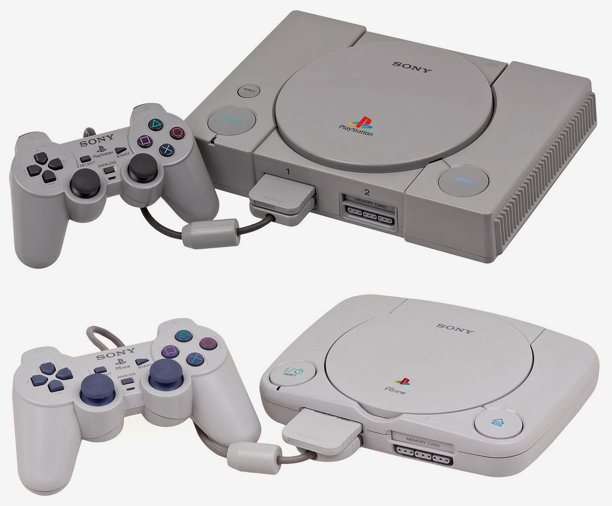
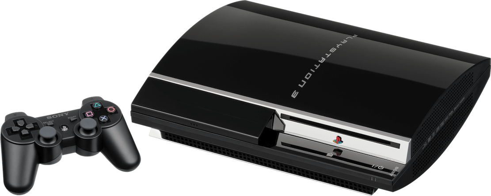
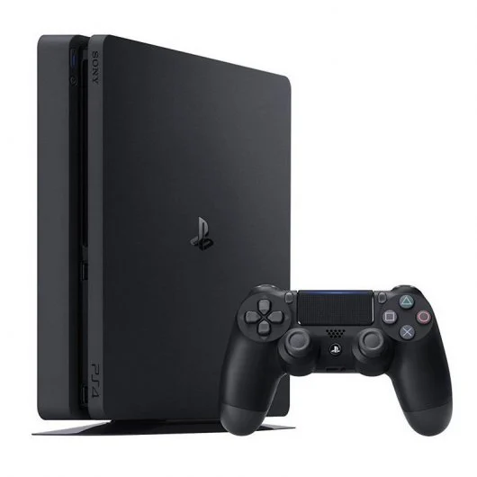
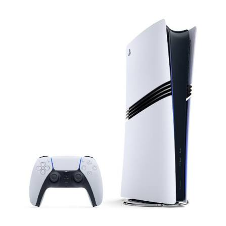

| PS1 | PS2 | PS3 | PS4 | PS5 | |
|---|---|---|---|---|---|
| Año de lanzamiento | La PS1 salio en Europa el 29 de septiembre de 1995 | La PS2 salio en Europa el 24 de noviembre de 2000 | La PS3 salio en Europa el 23 de marzo de 2007 | La PS4 salio en Europa el 29 de noviembre de 2013 | La PS5 salio en Europa el 19 de noviembre de 2020 |
| Año retirada | Sony detuvo oficialmente la producción y distribución global de la PS1 el 23 de marzo de 2006 | El año de retirada y cese de fabricación de la PS2 en Europa y a nivel mundial fue 2013 | La PS3 fue retirada del mercado en marzo de 2016 | En principio la retirada definitiva de los servicios en línea y funciones sociales de la PS4 sera en 2026 | No tiene fecha de retirada oficial, Sony no ha anunciado nada |
| Precio de salida | La PS1 se lanzo por 59.995 pesetas, lo que equivale a unos 360 euros | La PS2 se lanzo por 74.900 pesetas, lo que equivale a unos 450 euros | La PS3 se lanzo por 599 euros | La PS4 se lanzo por 399 euros | La PS5 se lanzo por 499,99 euros |
| Imagen |  |
|
 |
 |
 |
| Características | La PlayStation 1 es una consola de 32 bits lanzada por Sony en 1994 que revolucionó el videojuego al estandarizar los gráficos 3D y el formato CD-ROM. | La PlayStation 2 es una consola de 128 bits lanzada en el año 2000 que lideró su generación al estandarizar el formato DVD e introducir el potente procesador Emotion Engine. | La PlayStation 3 es una consola de séptima generación lanzada en 2006 que introdujo el formato Blu-ray, el juego online gratuito con PlayStation Network y el complejo procesador Cell Broadband Engine. | La PlayStation 4 es una consola lanzada por Sony en 2013 que estandarizó la resolución 1080p, introdujo el botón Share para funciones sociales y se convirtió en uno de los mayores éxitos de la octava generación | La PlayStation 5 es una consola de novena generación lanzada en 2020 que destaca por su almacenamiento SSD ultra rápido que elimina tiempos de carga y el mando DualSense con tecnología háptica. |